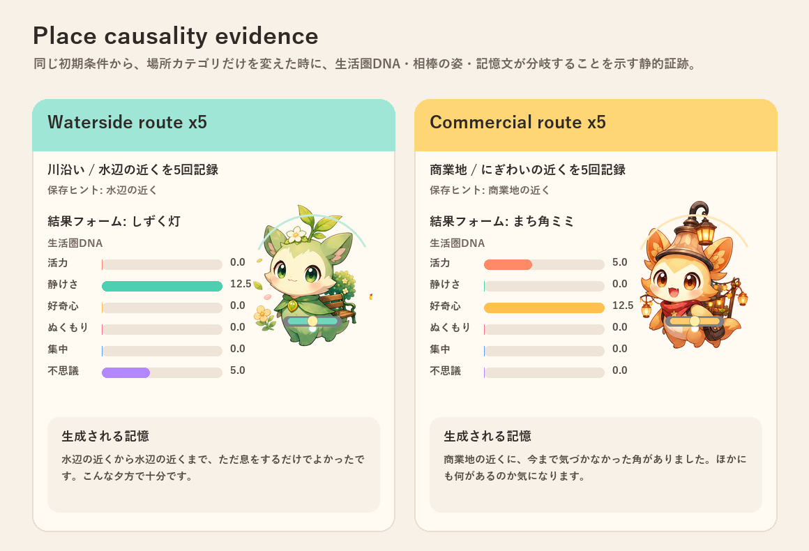

<!doctype html>
<html lang="ja">
<meta charset="utf-8">
<meta name="viewport" content="width=device-width, initial-scale=1">
<title>GeoFamiliar Place Evidence</title>
<style>
body{margin:0;font-family:system-ui,-apple-system,BlinkMacSystemFont,"Yu Gothic",sans-serif;background:#f7f1e8;color:#2f2a25}
main{max-width:1040px;margin:0 auto;padding:28px 18px 40px}
h1{font-size:28px;margin:0 0 8px}
p{color:#6d6257;line-height:1.6}
img{width:100%;height:auto;border:1px solid #e9ddd0;border-radius:12px;background:white}
</style>
<main>
<h1>GeoFamiliar 場所カテゴリ因果証跡</h1>
<p>同じ初期条件から、水辺カテゴリ5回と商業地カテゴリ5回で、生活圏DNA・相棒の姿・記憶文が分岐することを示します。</p>

</main>
</html>
